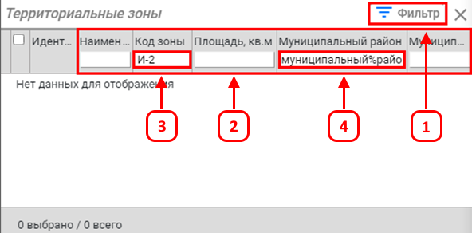

Вызов атрибутивной таблицы объектов слоя рассмотрен в п.3.1.
После чего для удобства поиска в таблице по объектам рекомендуется воспользоваться фильтром, для этого:
-
Для этого требуется кликнуть на кнопку «Фильтр».
-
Выбрать нужное поле для поиска из имеющихся.
-
Ввести необходимые данные в поле.
-
Поиск двух и более слов следует вводить через знак «%».
